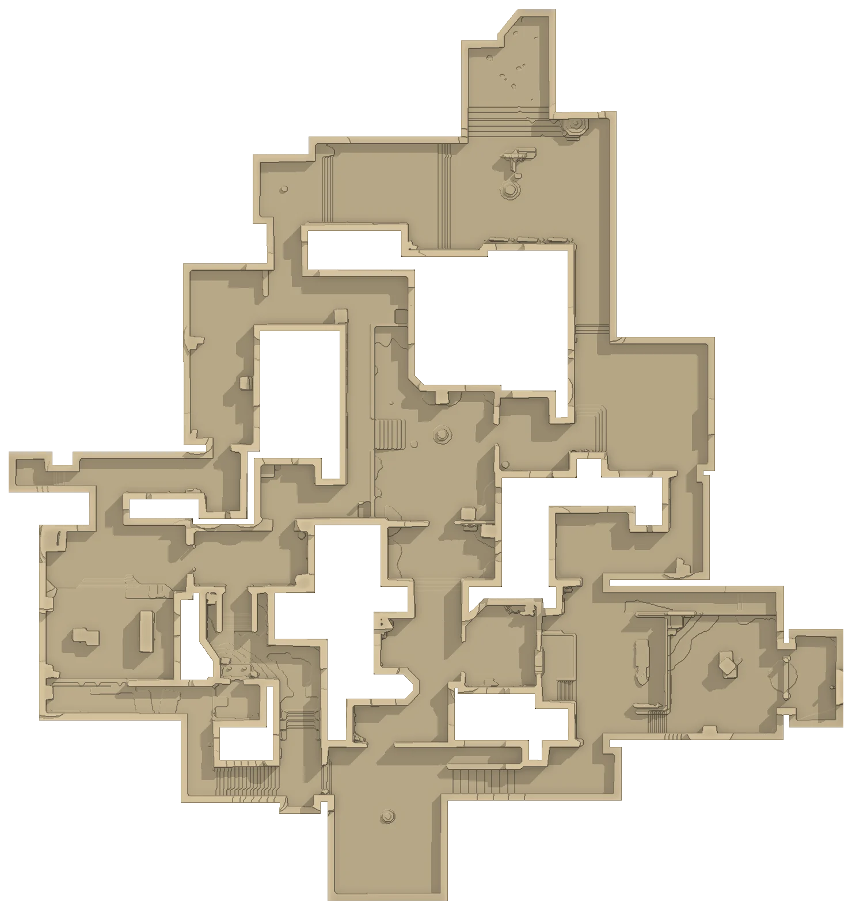

ASCENT
Venice, Italy
Every callout on your relief. Tap a marker for the name, the slang and a view from that spot, or test yourself.

Where is
About Ascent
- Release date
- June 2, 2020 – part of VALORANT 1.0
- Setting
- Venice, Italy – a chunk of the city floating high in the sky
- Layout
- Two bomb sites (A and B) connected by a big open Mid
- Special
- Closable doors on both sites – at A Link and B Market
- Trivia
- The first map ever developed for the game
All maps
 AbyssJan Mayen, Norway23 callouts
AbyssJan Mayen, Norway23 callouts AscentVenice, Italy68 callouts
AscentVenice, Italy68 callouts BindRabat, Morocco28 callouts
BindRabat, Morocco28 callouts BreezeBermuda Triangle, Atlantic23 callouts
BreezeBermuda Triangle, Atlantic23 callouts FractureNew Mexico, USA22 callouts
FractureNew Mexico, USA22 callouts HavenThimphu, Bhutan29 callouts
HavenThimphu, Bhutan29 callouts IceboxBennett Island, Russia25 callouts
IceboxBennett Island, Russia25 callouts LotusWestern Ghats, India28 callouts
LotusWestern Ghats, India28 callouts PearlLisbon, Portugal26 callouts
PearlLisbon, Portugal26 callouts SplitTokyo, Japan24 callouts
SplitTokyo, Japan24 callouts SunsetLos Angeles, USA17 callouts
SunsetLos Angeles, USA17 callouts